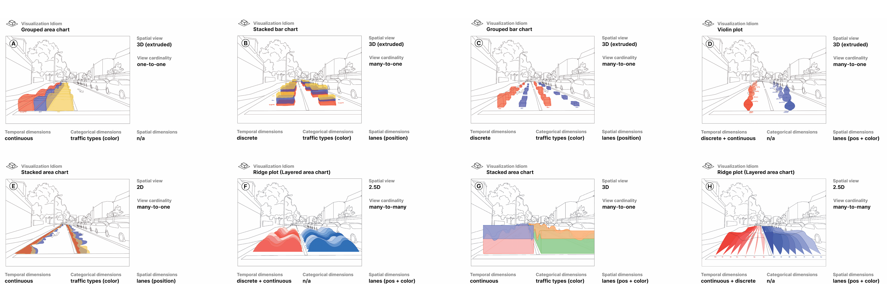
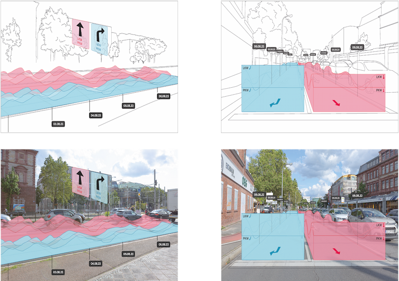
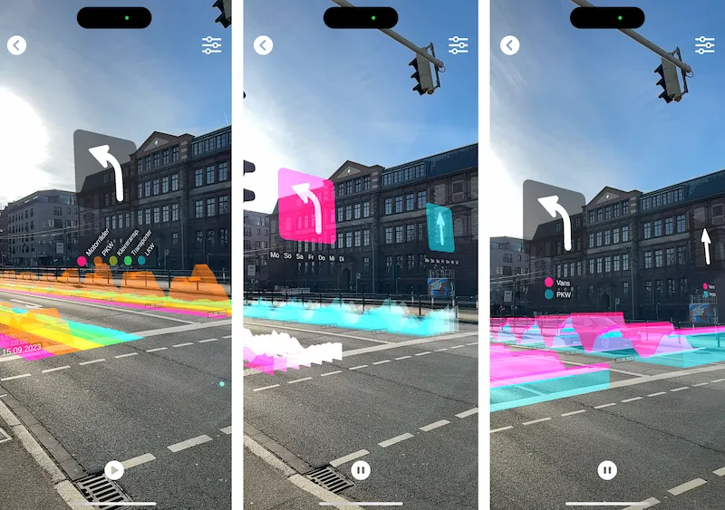

Ich habe 2019 ein Praktikum in der Agentur Mark Lotse ➚ gemacht und dort Lust auf Illustration, Kommunikation und Webentwicklung bekommen. 2020 habe ich angefangen, Kommunikationsdesign an der Fakultät für Gestaltung in Mannheim ➚ zu studieren. Im Laufe des Studiums lege ich meine Schwerpunkte auf interaktives Design, Creative Coding, das Gestalten von Räumen und wie ich diese Leidenschaften verbinden kann. Zudem absolvierte ich ein 5-monatiges Praktikum als UX-Designer:in bei der sovanta AG ➚ in Heidelberg. Neben dem Studium arbeitete ich 2023 – 2024 im Human Data Interaction Lab (HDIL) ➚ der Hochschule Mannheim. Im Sommer 2024 schloss ich mein Studium erfolgreich mit meiner Bachelorarbeit ab.
Der AR Data Experience Point im HDIL ➚ ist eine Forschungsarbeit zu eingebetteten zeitlichen Datenvisualisierungen in einer städtischen Umgebung zur Exploration von Verkehrsdaten im Alltag. Die Interaktion mit städtischen Daten wird durch Argumented Reality realisiert. Dadurch können die Daten eingebettet in die Realität, die sie darstellen, besser verstanden werden. Wie in dem Video zu sehen ist, wird auf einem mobilen Gerät ein gruppiertes Flächendiagramm, das die Entwicklung des Verkehrs nach Verkehrsarten für zwei Fahrspuren visualisiert, angezeigt. Die Zeitangaben sind entlang der Achse positioniert, mit Pfeilen und Legenden, die leicht über dem Kopf schweben. An dem Projekt waren Till Nagel, Christoph Huber, Ekkehard Petzold und Sophie Humbert beteiligt.

Für das Projekt entwickelte ich verschiedene Visualisierungssprachen, die von kontinuierlichen gruppierten Flächendiagrammen über diskrete gestapelte Balkendiagramme, gruppierte Balkendiagramme, Geigenplots, flache Flächendiagramme bis hin zu geschichteten Flächendiagrammen für mehrere Zeitachsen reichen. Der Fokus im Design der Visualisierung lag darauf, wie die Visualisierung der Daten mit dem Umfeld verbunden ist.
Im Designkonzept haben wir daher folgende Aspekte betrachtet:
Das Konzept stellt die konventionelle Darstellung von Zeit in Frage, berücksichtigt jedoch wie verschiedene Kulturen Zeit anders wahrnehmen und an welcher Position der:die Betracher:in.
Durch die Einbettung und die synchronisierung von Daten und Zeit der Beobachtung, werden die Daten relevanter und unmittelbarer aufgenommen. Es wird unterschieden, ob die Daten aktuell, historisch oder vorausschauend sind.
Dadurch das die Visualisierung in einer städtischen Umgebung stattfindet, kann der Maßstab der Visualisierung daran angepasst werden und auch umliegende Merkmale der Stadt in die Visualisierung mit einbezogen werden.
Wir haben uns angeschaut, welche Visualisierungstechniken am Besten in eine städtische Umgebung passen und wie der Standort der betrachtenden Person die Darstellungsart beeinflusst.


Die Entwürfe wurden in einer mobilen Anwendung, die ortsbezogene Augmented Reality nutzt, umgesetzt. In dem Demonstrator werden Daten von Computer-Vision-basierte Tracking-Systemen verwendet, die an Standorten installiert sind, die einzelne Fahrzeuge verfolgen und in Verkehrskategorien aus dem Smart City-Projekt des HDIL ➚ in Mannheim einordnen.